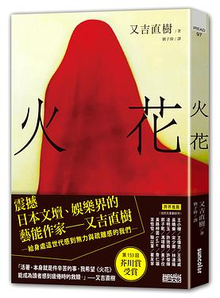

fictional story chronicles several years of the life of Tokunaga (徳永), a Manzai comedian (漫才師). Manzai is a traditional Japanese style of comedy which has been said to originate from the Heian period (794-1185), and usually involves a 2-person team standing on stage and trying to entertain the audience with their amusing conversation
